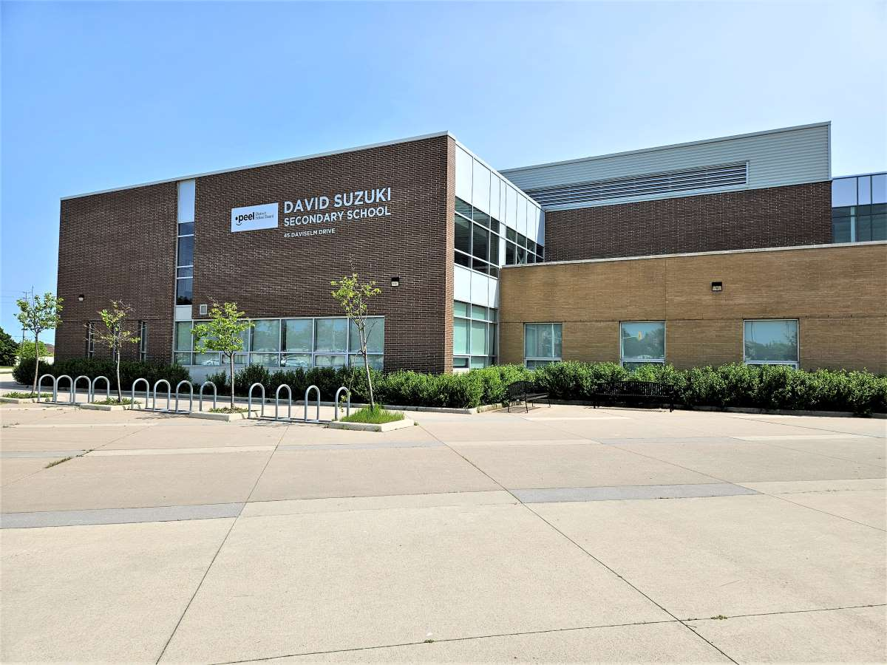

DAVID SUZUKI SECONDARY SCHOOL
I started High school at David Suzuki Secondary School and mostly took Math courses, science courses and engenieering courses as part of my electives in grade 11 and 12.
ONTARIO TECH UNIVERSITY
I Started Attending Ontario Tech University in 2023 after accepting my offer to their Integrated mathematics and computer science program.